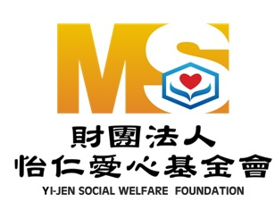

|益尋愛|桃園青年志工中心。怡仁基金會
怡仁愛心基金會，是由桃園敏盛醫療體系支持成立之團體，體系總裁楊敏盛先生當初設立怡仁愛心基金會的理念，即希望在救助醫療病患之餘， 能更進一步擴大慈善福利活動，讓更多需要幫助的人都能得到社會的關懷與協助。
民國七十四年敏盛綜合醫院成立怡仁愛心基金會，從初期的醫療補助、急難救助、義診施醫、協助殘障社團成立一直到近期志願服務的 推廣，同時結合醫療體系與社會福利，積極推動社區健康營造。
前往怡仁基金會